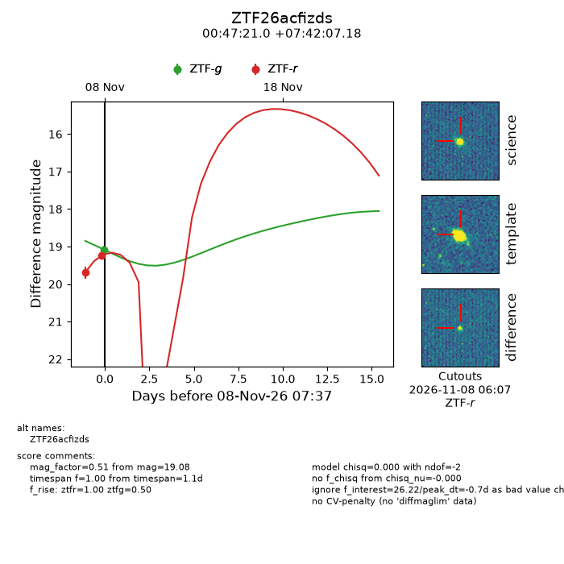
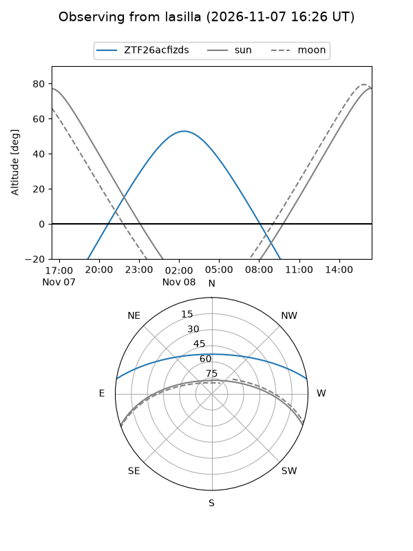
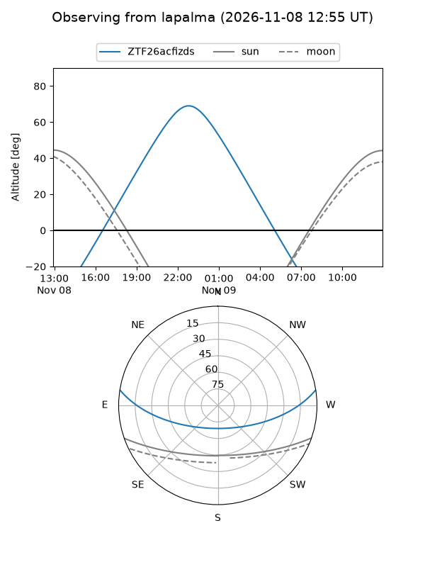
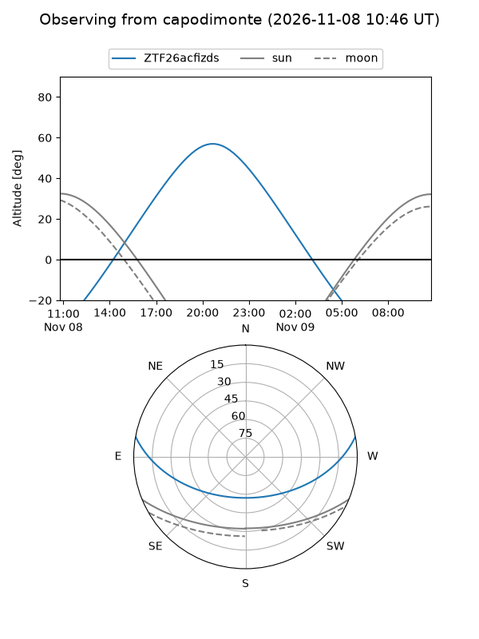
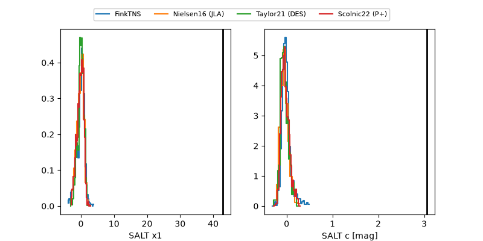

ZTF26acfizds
Target ZTF26acfizds at 2026-11-08 07:39
Aliases and brokers:
FINK-ZTF: ztf.fink-portal.org/ZTF26acfizds
Lasair-ZTF: lasair-ztf.lsst.ac.uk/objects/ZTF26acfizds
ALeRCE-ZTF: alerce.online/object/ZTF26acfizds
Direct TNS query: direct search
alt names
ZTF26acfizds (ztf,fink_ztf)
Coordinates:
equatorial (ra, dec) = 11.8375,+7.70200
equatorial (HMS+DMS) = 00:47:20.99,+07:42:07.18
galactic (l, b) = (121.1591,-55.15568)
Flags:
peak dt: -0.7
Photometry:
last ztfg=19.08, ztfr=19.23
1 ztfg, 2 ztfr detections
Lightcurve

Visibility



Additional plots
